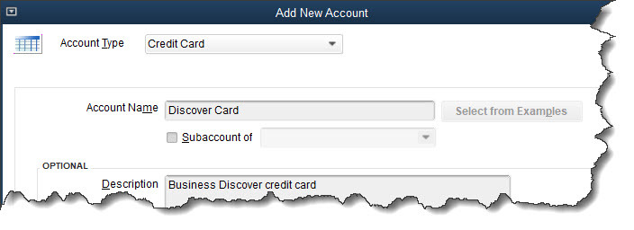

Importing your bank transactions into QuickBooks saves time, improves accuracy, and makes you a better money manager.
It’s been a long time since your only options for learning about your bank balances and cleared transactions involved your telephone and your monthly statement. These days, accounting software and websites allow you to set up online connections to your financial institutions and download cleared transactions.
If you’re new to QuickBooks or you haven’t set up online banking yet, you may not realize how simple it can be (depending on your financial institution), or how safe it is. You can connect to one of your banks and import months of transactions in less than 10 minutes, depending on how active your accounts are, and again, your banks. And QuickBooks uses data protection that is similar to what banks themselves use. As long as you’re following personal security protocols on your own computer, you’re very unlikely to encounter problems.
Online banking saves an enormous amount of time. It provides daily updates on your accounts, and if you entered the original transactions correctly, accuracy is assured. This real-time view of your finances can help you avoid money problems, make better business decisions, and plan for your company’s future.
Here’s how it works.
QuickBooks provides the tools required to set up and maintain online banking in the Bank Feeds Center. To get there, open the Banking menu and select Bank Feeds, then Bank Feed Center. Click Add account in the upper right. QuickBooks will display a message saying it needs to close all open windows. Click Yes. In the Bank Feed Setup window that opens, select your bank from the list or enter its name in the search box if it’s not there.
Not every financial institution provides a direct connection to QuickBooks, but many of the major ones do. If yours does, you’ll see a window like this:
You’ll see a window like this if your financial institution is set up for direct connections to QuickBooks.
Enter the user ID and password that you use to sign on to your bank’s website, then click Connect. You may be told that your financial institution needs more information. If that occurs, just follow the instructions. In our example, Discover Card wanted to send a temporary identification code as an email or text. Select your preference from the drop-down list and click Connect. Once you’ve retrieved your code and entered it, click Connect again. QuickBooks will open a window that displays your account(s) at the institution.
Now you have to tell QuickBooks where to download the transactions. Click the down arrow in the field under QuickBooks Accounts. You can select an existing account or create a new one. We want to create a new one here, so you’d click Create New Account. You may recognize the Add New Account window if you’ve done this before. QuickBooks already knew that this was a credit card account, so it pre-selected that option in the Account Type field. If you’re connecting a checking account, for example, you would probably want to select Bank. Enter an Account Name. If you want to make it a Subaccount of another account, check that box and select the parent account from the drop-down list (or add a new one).
When you set up online banking, you need to either create a new account in QuickBooks for each bank or credit card account or select an existing one.
The rest of the fields here are optional. You can fill in the description and account number if you’d like, but don’t assign Tax-Line Mapping or Opening Balance without talking to us. Just leave them for now. When you’re done, click Save & Close. Click Connect in the window that opens after you’ve made sure your new account is showing in the field below QuickBooks Accounts.
If all has gone well, you’ll get a message saying that your account has been added to QuickBooks. Click Close. Go to Banking | Bank Feeds | Banks Feeds Center again. In the field next to Bank and Credit cards, click the down arrow to see a list if your new account isn’t already showing and select it. Click the rotating circle in the blue card below to download your first set of transactions (or anytime you want to refresh the feed). This will typically bring in 90 days of transactions, depending on your financial institution.
Click the rotating blue circle anytime you want to download transactions from your bank.
There are many ways financial institutions interact with QuickBooks’ bank feeds. This was the simplest one. You might have to contact your financial institution to get QuickBooks Direct Connect set up (fees may apply) or you may have to go to your bank’s website and select the statement or transactions you want to move into QuickBooks.
Next month, we’ll talk about managing the transactions you’ve downloaded into QuickBooks. In the meantime, we’re happy to help you troubleshoot your bank downloads if you need help.